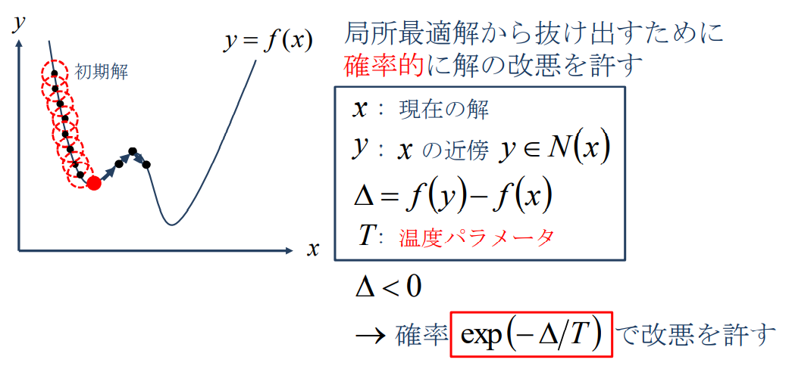

ヒューリスティック、または発見的手法とは、必ずしも正しい答えを導けるとは限らないが、ある程度のレベルで正解に近い解を得ることができる方法である。
「ヒューリスティクス - Wikipedia」https://ja.wikipedia.org/wiki/ヒューリスティック
メタヒューリスティックとは、組合せ最適化問題のアルゴリズムにおいて、特定の計算問題に依存しないヒューリスティクスのことである。
Wikipedia の概要を引用：
通常ある問題に対しての「解法」が存在するとき、その解法が適用できる範囲はその問題に対してのみである。
ところが近似アルゴリズムのように厳密な答えではなく、なるべく「答えに近い」まで拡大すると、局所探索法や貪欲法など複数の問題に対しても使用できる手法が存在する。
メタヒューリスティクスとは特定の問題に限定されず、どのような問題に対しても汎用的に対応できるように設計された、アルゴリズムの基本的な枠組みのことである。
言い換えればヒューリスティックアルゴリズムの内、特定の問題に依存せず手法のみが独立したものである。それゆえあらゆる問題に適用可能である。
このことはNP困難のような多項式時間で最適解を求めるアルゴリズムが存在しないと思われる問題などに対して有効である。
ただし、一般的にメタヒューリスティクスは特定の問題専用のヒューリスティクスより平均的な解の精度が劣ることが多い。これは汎用的な探索をするためには問題に対する事前知識を必要とせずに実装しなければならないので、それらを有効に使用することで解の探索を行う方法に対してどうしても不利な立場で探索を進める必要があるからである。
「メタヒューリスティック - Wikipedia」https://ja.wikipedia.org/wiki/メタヒューリスティック
プレ卒研では次のような問題に対して効率的に近似解を解くアルゴリズムを学ぶ。
#include <stdio.h>
printf()
| 変換指定子 | 説明 | 出力例 |
|---|---|---|
%d | 整数 | 123 |
%f | 小数 | 123.456000 |
%e | 指数表現 | 1.234560e+002 |
%g | 指数部-4以上: %f指数部 -5以下: %e | 0.0003453.45e-005 |
| 記述 | 説明 | 出力結果 |
|---|---|---|
printf("[%8d]\n", 123); | 8文字幅 | [ 123] |
printf("[%08d]\n", 123); | 8文字幅(0埋め) | [00000123] |
printf("[%12f]\n", 12.34567); | 12文字幅 | [ 12.345670] |
printf("[%12.2f]\n", 12.34567); | 小数点以下2桁(四捨五入) | [ 12.35] |
printf("%+d\n", 123); | +も表示 | +123 |
#include <stdlib.h>
srand(), rand(), RAND_MAX
#include <stdlib.h>int main(void) {1// 疑似乱数のシード値を設定する1srand(0); // 引数はint型1// 0からRAND_MAXまでの整数の疑似乱数を返す1int x = rand();1// 0からn-1までの整数の疑似乱数を返す1int x = rand() % n;1// 0から1までの倍精度浮動小数点数を返す1double x = (double)rand()/RAND_MAX;1// minからmaxまでの倍精度浮動小数点数を返す1double x = (double)rand()/RAND_MAX * (max-min) + min;}
備考: 「計算研究会 - C言語のrand関数について」https://www.calc.mie.jp/posts/2017-05-26-c-prog-rand.html
#include <limits.h>
INT_MIN, INT_MAX
| 定数 | 説明 |
|---|---|
INT_MIN | int型の最小値 |
INT_MAX | int型の最大値 |
#include <float.h>
DBL_MIN, DBL_MAX
DBL_MIN | double型の最小値 |
DBL_MAX | double型の最大値 |
#include <math.h>
acos(), asin(), atan(), atan2(), cos(), sin(), tan(), exp(), exp2(), log(), log10(), fabs(), hypot(), pow(), sqrt()
| I/F | 説明 |
|---|---|
double acos(double x); | $\cos^{-1}x$ |
double asin(double x); | $\sin^{-1}x$ |
double atan(double x); | $\tan^{-1}x$ |
double atan2(double y, double x); | $\mathrm{atan}2(y,x)$ |
double cos(double x); | $\cos x$ |
double sin(double x); | $\sin x$ |
double tan(double x); | $\tan x$ |
double exp(double x); | $e^x$ |
double exp2(double x); | $2^x$ |
double log(double x); | $\log_ex$ |
double log10(double x); | $\log_{10}x$ |
double fabs(double x); | $|x|$ |
double hypot(double x, double y); | $\sqrt{x^2+y^2}$ |
double pow(double x, double y); | $x^y$ |
double sqrt(double x); | $\sqrt{x}$ |
double cbrt(double x); | $\sqrt[3]{x}$ |
double fmax(double x, double y); | $\max(x,y)$ |
double fmin(double x, double y); | $\min(x,y)$ |
#include <math.h>
M_E, M_PI, M_PI_2, M_PI_4, M_1_PI, M_2_PI, M_SQRT2, M_SQRT1_2
| 記述 | 説明 |
|---|---|
M_E | $e$ |
M_PI | $\pi$ |
M_PI_2 | $\pi/2$ |
M_PI_4 | $\pi/4$ |
M_1_PI | $1/\pi$ |
M_2_PI | $2/\pi$ |
M_SQRT2 | $\sqrt{2}$ |
M_SQRT1_2 | $1/\sqrt{2}$ |
#include <iostream>
cout, endl;
#include <iostream>using namespace std;int main() {1// 普通に出力1cout << 123.456 << endl;1cout << "f(x)=" << 123.456 << endl;}
123.456f(x)=123.456
#include <iomanip>
setprecision(), setw(), setfill()
#include <iostream>#include <iomanip>using namespace std;int main() {1// 小数点以下2桁で出力(四捨五入もする)1cout << setprecision(-2) << 123.456 << endl;1// 幅5で出力1cout << setw(5) << 1.23 << endl;1// 余白を0で埋める1cout << setw(5) << setfill('0') << 1.23 << endl;}
123.46 1.2301.23
C言語のrand()は線形合同法は周期が短いため、メルセンヌ・ツイスタを使う。メルセンヌ・ツイスタは高品質の疑似乱数列を高速に生成できる。
#include <random>
mt19937_64, uniform_real_distribution
#include <random>#using namespace std;int main() {1// シード値0のメルセンヌ・ツイスタ疑似乱数を生成1mt19937_64 mt(0);1// minからmaxまでの一様分布生成器1uniform_real_distribution<> dist(min, max);1// 乱数をxに代入1double x = dist(mt);}
#include <limits>
numeric_limits, infinity()
| 記述 | 説明 |
|---|---|
numeric_limits<double>::infinity() | $\infty$ |
-numeric_limits<double>::infinity() | $-\infty$ |
#include <cmath>
acos(), asin(), atan(), atan2(), cos(), sin(), tan(), exp(), exp2(), log(), log10(), abs(), hypot(), pow(), sqrt()
| I/F | 説明 |
|---|---|
acos(x) | $\cos^{-1}x$ |
asin(x) | $\sin^{-1}x$ |
atan(x) | $\tan^{-1}x$ |
atan(y,x) | $\mathrm{atan}2(y,x)$ |
cos(x) | $\cos x$ |
sin(x) | $\sin x$ |
tan(x) | $\tan x$ |
exp(x) | $e^x$ |
exp2(x) | $2^x$ |
log(x) | $\log_ex$ |
log10(x) | $\log_{10}x$ |
abs(x) | $|x|$ |
hypot(x,y) | $\sqrt{x^2+y^2}$ |
pow(x,y) | $x^y$ |
sqrt(x) | $\sqrt{x}$ |
cbrt(x) | $\sqrt[3]{x}$ |
fmax(x,y) | $\max(x,y)$ |
fmin(x,y) | $\min(x,y)$ |
#include <cmath>
M_E, M_PI, M_PI_2, M_PI_4, M_1_PI, M_2_PI, M_SQRT2, M_SQRT1_2
| 記述 | 説明 |
|---|---|
M_E | $e$ |
M_PI | $\pi$ |
M_PI_2 | $\pi/2$ |
M_PI_4 | $\pi/4$ |
M_1_PI | $1/\pi$ |
M_2_PI | $2/\pi$ |
M_SQRT2 | $\sqrt{2}$ |
M_SQRT1_2 | $1/\sqrt{2}$ |
import numpy as np
np.random.seed(), np.random.rand()
#import numpuy as np# シード値を0に設定np.random.seed(0)// 0以上1未満の一様分布の乱数を100個生成arr = np.random.rand(100)// min以上max未満の一様分布の乱数を100個生成arr = np.random.rand(100) * (max-min) + min
import numpy as np
np.inf
| 記述 | 説明 |
|---|---|
np.inf | $\infty$ |
-np.inf | $-\infty$ |
np.ndarrayに対して使えるものを抜粋。
import numpy as np
np.arccos(), np.arcsin(), np.arctan(), np.arctan2(), np.cos(), np.sin(), np.tan(), np.exp(), np.exp2(), np.log(), np.log10(), np.abs(), np.sqrt(), np.hypot(), np.ndarray.max(), np.argmax(x), np.ndarray.min(), np.argmin(x)
| I/F | 説明 |
|---|---|
np.arccos(x) | $\cos^{-1}x$ |
np.arcsin(x) | $\sin^{-1}x$ |
np.arctan(x) | $\tan^{-1}x$ |
np.arctan2(y,x) | $\mathrm{atan}2(y,x)$ |
np.cos(x) | $\cos x$ |
np.sin(x) | $\sin x$ |
np.tan(x) | $\tan x$ |
np.exp(x) | $e^x$ |
np.exp2(x) | $2^x$ |
np.log(x) | $\log_ex$ |
np.log10(x) | $\log_{10}x$ |
np.abs(x) | $|x|$ |
np.hypot(x,y) | $\sqrt{x^2+y^2}$ |
np.sqrt(x) | $\sqrt{x}$ |
np.ndarray.max() | $\max(a_0,\cdots)$ |
np.argmax(x) | 最大値のindex |
np.ndarray.min() | $\min(a_0,\cdots)$ |
np.argmin(x) | 最小値のindex |
import numpy as np
np.e, np.pi
| 記述 | 説明 |
|---|---|
np.e | $e$ |
np.pi | $\pi$ |
まず問題設定が必要である。
ランダムに $\boldsymbol{x}$ を生成し、$f(\boldsymbol{x})$ を計算する。一番最大/最小のものが選ばれる。
下のフローチャートは最大の $f(x)$ を探すアルゴリズムを表している。

必要となるパラメータは次の $1$ つである。
#include <stdio.h>#include <stdlib.h>#include <float.h>#include <math.h>void plot(int count, double f, double x) {1printf("%d,%f,%f\n", count, f, x);}double func(double x) {1return sin(x) + 0.5*x; // 計算式記述}int main(void) {1// 繰り返し数1const int M = 100; // 繰り返し数を指定1// xの制約条件1const double min = 0.0; // 最大値を指定1const double max = 16.0; // 最小値を指定1// シード値を0に設定1srand(0);1// fの最大値とそのときのx1double f_max = DBL_MIN;1double x_max;1// M回試す1for (int i = 0; i < M; ++i) {2double x = (double)rand()/RAND_MAX * (max-min) + min;2double f = func(x);2if (f_max < f) {3f_max = f;3x_max = x;2}2plot(i, f_max, x_max);1}1// 結果を出力1printf("\n%f\n", f_max);1printf("%f\n", x_max);}
#include <iostream>#include <limits>#include <random>#include <cmath>using namespace std;void plot(int count, double f, double x) {1cout << count << ',' << f << ',' << x << endl;}double func(double x) {1return sin(x) + 0.5*x; // 計算式記述}int main(void) {1// 繰り返し数1const int M = 100; // 繰り返し数を指定1// xの制約条件1const double min = 0.0; // 最大値を指定1const double max = 16.0; // 最小値を指定1// シード値0の疑似乱数生成器を宣言1mt19937_64 mt(0);1uniform_real_distribution<> rand(min, max);1// fの最大値とそのときのx1double f_max = -numeric_limits<double>::infinity();1double x_max;1// M回試す1for (int i = 0; i < M; ++i) {2double x = rand(mt);2double f = func(x);2if (f_max < f) {3f_max = f;3x_max = x;2}2plot(i, f_max, x_max);1}1// 結果を出力1cout << f_max << endl;1cout << x_max << endl;}
import numpy as npfrom matplotlib import pyplot as pltdef plot(count, f, x):1print(f'{count},{f},{x}')def func(x):1return np.sin(x) + 0.5*x # 計算式記述# 繰り返し数M = 100 # 繰り返し数を指定# xの制約条件min = 0.0 # 最小値を指定max = 16.0 # 最大値を指定# fの最大値とそのときのxf_max = -np.infx_max = None# f_maxの軌跡を格納した配列(0で初期化)f_max_list = np.zeros(M)# シード値設定np.random.seed(0)# M回試すfor i in range(M):1x = np.random.rand() * (max - min) + min1f = func(x)1if f_max < f:2f_max = f2x_max = x1f_max_list[i] = f_max1plot(i, f_max, x_max)# 結果を出力print(f_max)print(x_max)plt.plot(f_max_list)
近傍 $N(\boldsymbol{x})$ を定め、その中でランダムな $x$ を出力する。
近傍は大抵「$x_0$ から距離 $\alpha$ 以内」と定義される。($x_0$ とは x_max のこと)

必要となるパラメータは次の $3$ つである。
#include <stdio.h>#include <stdlib.h>#include <float.h>#include <math.h>void plot(int count, double f, double x) {1printf("%d,%f,%f\n", count, f, x);}double func(double x) {1return sin(x) + 0.5*x; // 計算式記述}int main(void) {1// 繰り返し数1const int M = 100; // 繰り返し数を指定1// xの制約条件1const double min = 0.0; // 最大値を指定1const double max = 16.0; // 最小値を指定1// N(x)の範囲1const double dist = 5.0; // x_maxからの距離を指定1// シード値を0に設定1srand(0);1// fの最大値とそのときのx1double f_max = DBL_MIN;1double x_max = (double)rand()/RAND_MAX * (max-min) + min;1// M回試す1for (int i = 0; i < M; ++i) {2double x = ((double)rand()/RAND_MAX - 0.5) * 2*dist + x_max;2if (min < x && x < max) {3double f = func(x);3if (f_max < f) {4f_max = f;4x_max = x;3}2}2plot(i, f_max, x_max);1}1// 結果を出力1printf("%f\n", f_max);1printf("%f\n", x_max);}
#include <iostream>#include <limits>#include <random>#include <cmath>using namespace std;void plot(int count, double f, double x) {1cout << count << ',' << f << ',' << x << endl;}double func(double x) {1return sin(x) + 0.5*x; // 計算式記述}int main(void) {1// 繰り返し数1const int M = 100; // 繰り返し数を指定1// xの制約条件1const double min = 0.0; // 最大値を指定1const double max = 16.0; // 最小値を指定1// N(x)の範囲1const double dist = 5.0; // x_maxからの距離を指定1// シード値0の疑似乱数生成器を宣言1mt19937_64 mt(0);1uniform_real_distribution<> rand(-dist, dist);1uniform_real_distribution<> rand_zero(min, max);1// fの最大値とそのときのx1double f_max = -numeric_limits<double>::infinity();1double x_max = rand_zero(mt);1// M回試す1for (int i = 0; i < M; ++i) {2double x = rand(mt) + x_max;2if (min < x && x < max) {3double f = func(x);3if (f_max < f) {4f_max = f;4x_max = x;3}2}2plot(i, f_max, x_max);1}1// 結果を出力1cout << f_max << endl;1cout << x_max << endl;}
import numpy as npdef func(x):1return np.sin(x) + 0.5*x # 計算式記述M = 10 # 繰り返し数N = 100 # 近傍中の乱数生成数# xの制約条件min = 0.0 # 最小値を指定max = 16.0 # 最大値を指定# 近傍の設定 (x_maxから5.0以内)dist = 5.0 # 距離を指定# シード値を0に設定np.random.seed(0)# fの最大値とそのときのxf_max = -float('inf')x_max = np.random.rand() * (max-min) + min # 最初のx_maxを定めておくfor i in range(N):1xs = x_max + (np.random.rand(N)-0.5)*2*dist1xs = xs[(min <= xs) & (xs <= max)]1fs = func(xs)1idx = fs.argmax()1if f_max < fs[idx]:2f_max = fs[idx]2x_max = xs[idx]1else:2breakprint(f_max)print(x_max)ランダム性を用いて局所最適解からの脱出を試みる手法である。
局所最適解から抜け出すために確率的に解の改悪を許す。
